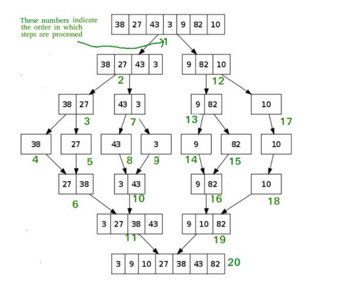

Merge Sort is a Divide and Conquer algorithm. It divides the input array into two halves, calls itself for the two halves, and then merges the two sorted halves. The merge() function is used for merging two halves. The merge(arr, l, m, r) is a key process that assumes that arr[l..m] and arr[m+1..r] are sorted and merges the two sorted sub-arrays into one. 
The selection sort algorithm sorts an array by repeatedly finding the minimum element (considering ascending order) from unsorted part and putting it at the beginning. The algorithm maintains two subarrays in a given array.
Insertion sort is a simple sorting algorithm that works similar to the way you sort playing cards in your hands.
The array is virtually split into a sorted and an unsorted part.
Values from the unsorted part are picked and placed at the correct position in the sorted part.